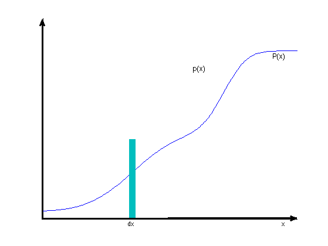
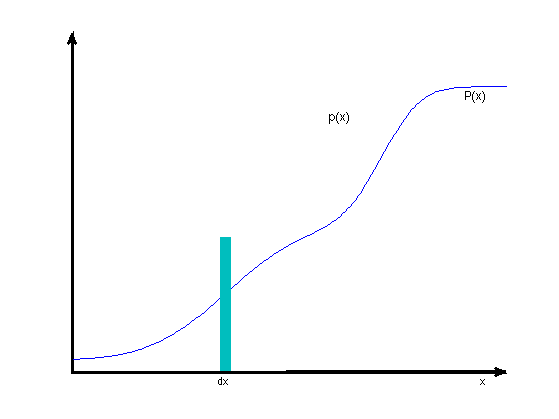

Illustration of an arbitrary PDF and its corresponding CDF
Reproduces Bishop Figure 1.12
% This file is from pmtk3.googlecode.com function plotPdfCdfDemo() pdf = @(x) (gaussProb(x,1,2.^2)+gaussProb(x,6,1))/2; fplot(pdf,[-10,10],'r'); cdf = @(x) quad(pdf,-3.99,x)/5 + 0.01; % /5 + 0.01 is a hack to super impose it overtop the pdf. figure; hold on; fplot(cdf,[-10,10],'b'); axis([-4,10,0,0.25]); set(gca,'XTick',[]); set(gca,'YTick',[]); %Auto generated annotation(gcf,'arrow',[0.1293 0.1292],[0.1079 0.9197],'LineWidth',2); annotation(gcf,'arrow',[0.1316 0.9039],[0.1112 0.1122],'LineWidth',2); annotation(gcf,'rectangle','LineStyle','none',... 'FaceColor',[0 0.749 0.749],... 'Position',[0.3929 0.114 0.02 0.32]); annotation(gcf,'textbox','String',{'p(x)'},'FontSize',12,... 'FitHeightToText','off',... 'LineStyle','none',... 'Position',[0.58 0.7 0.04086 0.0446]); annotation(gcf,'textbox','String',{'P(x)'},'FontSize',12,... 'LineStyle','none',... 'Position',[0.8214 0.7303 0.08372 0.06447]); annotation(gcf,'textbox','String',{'dx'},'FitHeightToText','off',... 'LineStyle','none',... 'Position',[0.38 0.0765 0.02598 0.03286]); annotation(gcf,'textbox','String',{'x'},'FitHeightToText','off',... 'LineStyle','none',... 'Position',[0.85 0.0765 0.02598 0.03286]); printPmtkFigure('pdfDemo'); end
 
